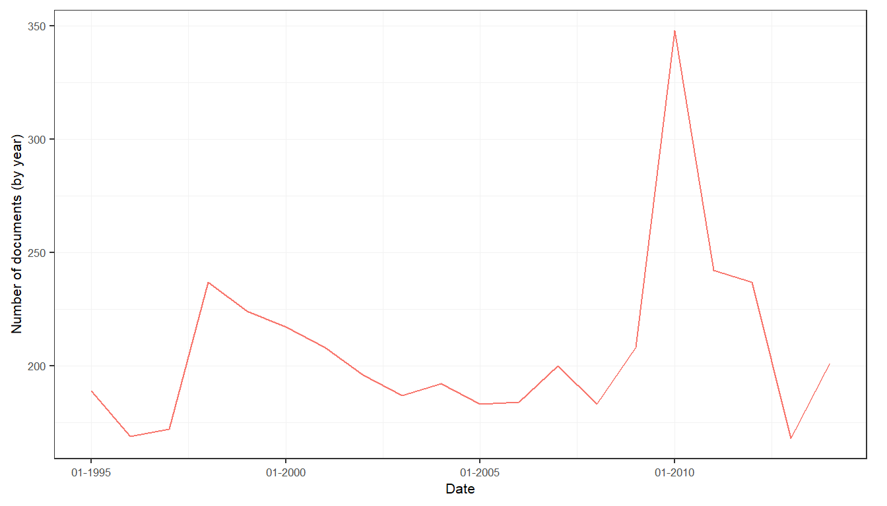
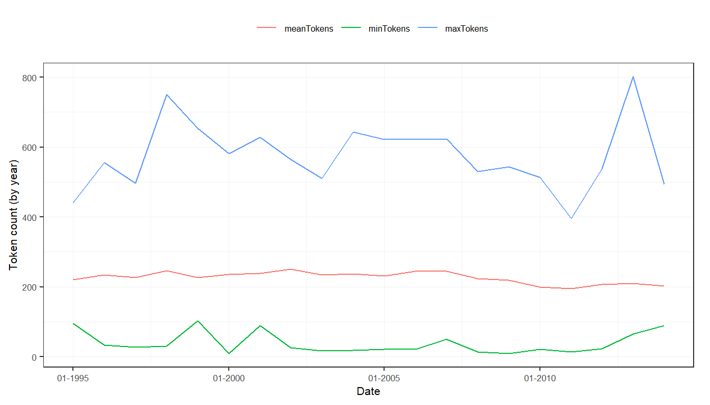

This tutorial provides insights in how to create, enrich, transform and analyze a corpus.
Preparation
library("sentometrics")
library("quanteda")
data("usnews")
data("list_lexicons")
data("list_valence_shifters")Summarize a corpus through some statistics and plots
Quickly investigate how your corpus looks like in terms of number of documents, number of tokens and its metadata features.
corpus
stats[, 1:6]
## date documents totalTokens meanTokens minTokens maxTokens
## 1: 1995-01-02 4 678 169.5000 110 213
## 2: 1995-01-09 5 934 186.8000 97 245
## 3: 1995-01-16 8 1854 231.7500 96 299
## 4: 1995-01-23 3 638 212.6667 184 249
## 5: 1995-01-30 5 1127 225.4000 189 282
## ---
## 1005: 2014-12-01 3 589 196.3333 103 315
## 1006: 2014-12-08 2 297 148.5000 138 159
## 1007: 2014-12-15 3 534 178.0000 171 182
## 1008: 2014-12-22 6 980 163.3333 116 191
## 1009: 2014-12-29 1 181 181.0000 181 181stats[, c(1, 7:10)]
## date wsj wapo economy noneconomy
## 1: 1995-01-02 1 3 1 3
## 2: 1995-01-09 3 2 2 3
## 3: 1995-01-16 4 4 3 5
## 4: 1995-01-23 1 2 0 3
## 5: 1995-01-30 3 2 2 3
## ---
## 1005: 2014-12-01 3 0 2 1
## 1006: 2014-12-08 2 0 1 1
## 1007: 2014-12-15 3 0 2 1
## 1008: 2014-12-22 6 0 2 4
## 1009: 2014-12-29 1 0 0 1summ2
plots$doc_plot # yearly evolution of the number of documents

plots$feature_plot # yearly evolution of the presence of the "wsj" and "wapo" features

plots$token_plot # yearly evolution of the token statistics (mean, min., max.)
